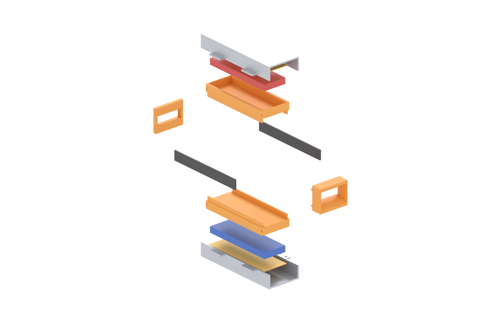
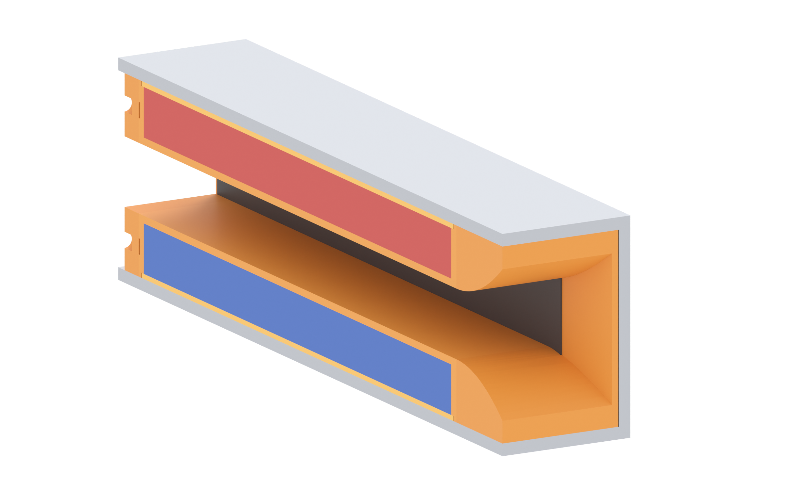
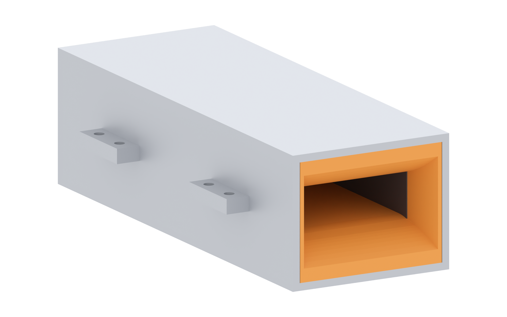

Brine runs through a 40 × 14 mm bore. A 483 mT field crosses it, current flows between two graphite plates on the side walls, and the Lorentz force pushes the water out the straight end. The steel yoke is the magnetic return path; the plastic tray is the only thing keeping water away from the magnets.
| z | Layer | Thickness | Function |
|---|---|---|---|
| 0 – 7 | bore | 14 tall | water channel, 40 wide |
| 7 – 8.5 | tray floor | 1.5 | only barrier between water and magnets |
| 8.5 – 18.5 | magnet cavity | 10 | closed on all six sides |
| 18.5 – 19.5 | cap | 1.0 | clamps the stack down, flush with steel |
| 19.5 – 22 | steel plate | 2.5 | flux return |
Cut two blanks from laser/clamshell-flat-2.5mm.dxf. Fold 90° down at
±28 (the walls), then fold the two lugs out 90° at ±47.96.
Check: 56 mm across the plate, 22 mm from plate face to lug face, two Ø3.4 holes per lug (13 mm apart) at x 40 and x 110.
Eight tiles per row, four rows, two layers deep — 48 per face. Two 5 mm layers make the 10 mm bar and fill the cavity 8.5 → 18.5.
Compass-check every row before the epoxy sets. All four rows on one face point the same way; the opposite face points the other way. One flipped row stalls that quarter of the bore.

Drop the 1 mm cap into the ledge in the tray rim. It sits on the magnets with its top face flush with the steel inner face, and stops the stack lifting when the field pulls. A bead of epoxy at the rim; never a puddle — epoxy in the bore is unreachable.
Each 134 × 14 × 2 plate slides into the 1 mm groove from the end. Its top shoulder hides behind 0.5 mm of floor; the full 14 mm face is exposed — 124 × 14 = 1736 mm² per electrode.
Push each plate until its end sits 5 mm inside the bellmouth or rear-block pocket. That pocket is the end seal.
Two 2 mm pegs each, into the blind holes in the tray end faces. The bellmouth takes the 48 × 30 mouth down to the bore over 20 mm.
At the outlet, drill through the last 0.4 mm of the lead channel, feed the two wires out, epoxy the hole closed around them. Keep the outlet straight.
Lower tray into the bottom yoke, upper into the top, bring the halves together so the lug faces meet. Eight M3 through the lugs — two per lug, 13 mm apart — tightened in a cross pattern a little at a time.
This is a stack clamp: the tray rim lands on the steel plate above, the mirrored tray butts it at z 0, and the bolts close the sandwich. Sideways there is 0.15 mm a side of clearance and nothing clamps it.

| Leak path | What was wrong | Fix in r2h |
|---|---|---|
| electrode groove roof | 2.2 mm groove cut 3.0 deep from z 7.0, so its ceiling sat at z 10.0 — 1.5 mm above the cavity floor at 8.5. A gutter into the magnet pocket. | groove 1.0 deep (7.0 → 8.0), ceiling 0.5 mm below the floor |
| end-block peg holes | holes 2.6 mm deep in a 2.0 mm wall — through-holes into the cavity at both ends | blind 1.6 deep, 0.4 mm of plastic behind, 2.3 mm lead-in |
| magnet lead exit | full-length bore opened the cavity to the outside | blind channel, 0.4 mm left; drill and epoxy at wiring time |